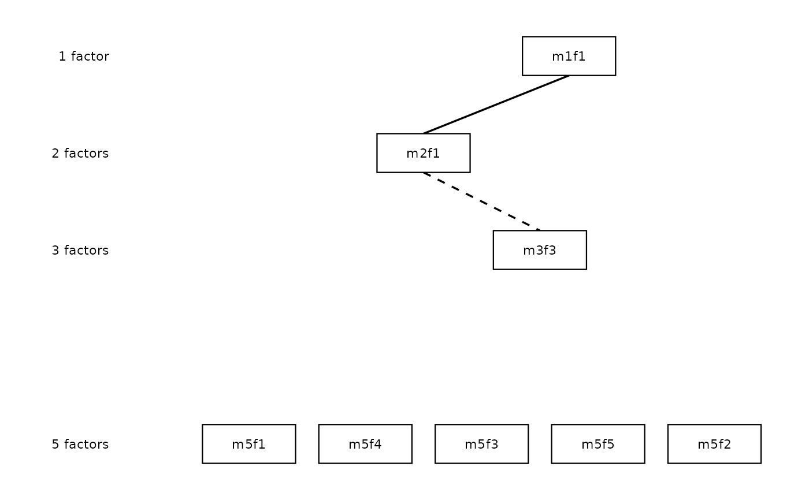

When what = "hierarchy" (default), renders the layered bass-ackwards
hierarchy as a ggplot2 diagram. Factors appear as labelled boxes arranged
in levels (level 1 at top, level k at bottom by default; set
direction = "horizontal" for a left-to-right layout). Between-level edges
below cut_show are hidden. Two aesthetics carry the edge information, each
explained by its own legend: sign (positive/negative) is shown by
sign_by (edge colour by default) and magnitude (|r|) by
magnitude_by (line thickness by default). No aesthetic is ever mapped
without a matching legend.
Usage
# S3 method for class 'ackwards'
autoplot(
object,
what = c("hierarchy", "fit"),
sign_by = c("color", "linetype", "both", "none"),
magnitude_by = c("linewidth", "none"),
cut_show = NULL,
color_pos = "#2166AC",
color_neg = "#D6604D",
color_edge = "black",
colour_pos = NULL,
colour_neg = NULL,
colour_edge = NULL,
node_width = 0.8,
node_height = 0.4,
min_sep = 1,
show_skip = NULL,
curvature = 0.2,
color_pruned = "grey80",
colour_pruned = NULL,
show_r = FALSE,
r_digits = 2L,
r_label_size = 2.5,
mono = FALSE,
edge_linewidth = NULL,
cut_strong = NULL,
direction = c("vertical", "horizontal"),
show_level_labels = TRUE,
level_label_size = 3,
node_labels = NULL,
primary_only = FALSE,
drop_pruned = FALSE,
compress_levels = FALSE,
show_arrows = TRUE,
legend = TRUE,
...
)
# S3 method for class 'ackwards'
plot(x, ...)Arguments
- object
An
ackwardsobject.- what
One of
"hierarchy"(default) or"fit". Controls which visualisation is produced. All other parameters are ignored whenwhat = "fit".- sign_by
How edge sign (positive vs negative correlation) is encoded. One of
"color"(default; positive =color_pos, negative =color_neg),"linetype"(positive = solid, negative = dashed),"both"(colour and linetype, with negative drawn as a distinct double-dash so it reads clearly in greyscale), or"none"(sign not encoded; all edgescolor_edgeand solid). Whichever channel is used gets a "Direction" legend. Colour is the default because it reads sign pre-attentively and leaves linetype free; switch to"linetype"or"both"for greyscale or colour-blind-safe figures.- magnitude_by
How edge magnitude (
|r|) is encoded. One of"linewidth"(default; thicker = stronger, with a|r|legend) or"none"(constant width). A numericedge_linewidthalso forces constant width at that value.- cut_show
Edges with
|r| < cut_showare not drawn. Defaults to the value used when the object was created (x$meta$cut_show, typically 0.3).- color_pos, colour_pos
Colour for positive edges when
sign_byuses colour. Default"#2166AC"(blue).colour_posis an accepted British alias.- color_neg, colour_neg
Colour for negative edges when
sign_byuses colour. Default"#D6604D"(red).colour_negis an accepted British alias.- color_edge, colour_edge
Single colour for all edges when
sign_bydoes not use colour ("linetype"or"none"). Default"black".colour_edgeis an accepted British alias.- node_width
Width of factor boxes in layout units. Default
0.8.- node_height
Height of factor boxes in layout units. Default
0.4.- min_sep
Minimum horizontal separation between nodes; passed to
ba_layout(). Default1.0.- show_skip
Whether to draw skip-level (non-adjacent) edges.
NULL(default) auto-detects:TRUEwhen the object was run withpairs = "all",FALSEotherwise. Ignored whendrop_pruned = TRUE.- curvature
Curvature of skip-level edge arcs. Passed to
ggplot2::geom_curve(). Positive values curve right; default0.2. Ignored whendrop_pruned = TRUE.- color_pruned, colour_pruned
Fill colour for nodes flagged as pruned/redundant. Default
"grey80". Only applied when the object carries pruning annotations (x$pruneis non-NULL) anddrop_pruned = FALSE(pruned nodes are omitted entirely whendrop_pruned = TRUE).colour_prunedis an accepted British alias.- show_r
Whether to label each drawn edge with its correlation coefficient. Default
FALSE. WhenTRUE, labels are formatted in APA style (leading zero stripped, e.g..23,-.30) and placed beside each edge using a white-background label that clears the arrowhead.- r_digits
Number of decimal places for edge labels when
show_r = TRUE. Default2L.- r_label_size
Font size for edge correlation labels when
show_r = TRUE. Passed toggplot2::geom_label()assize. Default2.5.- mono
Monochrome convenience wrapper. When
TRUE, equivalent tosign_by = "linetype"with black edges (it overridessign_byand the colour arguments).magnitude_bystill applies. DefaultFALSE.- edge_linewidth
NULL(default) usesmagnitude_byto decide edge width. A numeric value forces every edge to that constant width (implyingmagnitude_by = "none") and drops the|r|legend. Forbes figures use uniform thin lines (~= 0.5–0.6).- cut_strong
Deprecated in M35 and ignored (with a warning). Edge magnitude is now shown by
magnitude_by(linewidth) and sign bysign_by; the old strong/weak linetype split double-encoded magnitude. Retained only so existing calls do not error.- direction
Layout orientation.
"vertical"(default) stacks levels top-to-bottom (level 1 at top);"horizontal"lays them out left-to-right (level 1 at left), which suits wide slides or posters. Level-axis labels move to the bottom margin under"horizontal".- show_level_labels
Whether to draw level axis labels ("1 factor", "2 factors", ...) to the left of the diagram. Default
TRUE. When the object carries pruning annotations (x$prunenon-NULL) anddrop_pruned = FALSE, a level whose factors are all pruned has its axis label rendered in italic to denote its status (matching the grey node fill); partially-pruned levels keep a plain label.- level_label_size
Font size for level axis labels. Default
3.- node_labels
A named character vector mapping factor IDs (e.g.
"m5f1") to custom display strings (e.g."General"). Unspecified factors keep their defaultm{k}f{j}label. A warning is issued for names that match no factor ID in the object. DefaultNULL.- primary_only
When
TRUE, only primary-parent edges (is_primary == TRUE) are drawn. Because skip-level edges are never primary, this also suppresses skip arcs. Ignored whendrop_pruned = TRUE. DefaultFALSE.- drop_pruned
When
TRUE, activates the Forbes (2023) pruned-view rendering path: pruned nodes are removed from the diagram entirely and each retained node is connected to its single strongest kept ancestor by a straight arrow (even across level gaps). Requires the object to carry pruning annotations (piped throughprune()); errors if not. Overridesshow_skip,curvature, andprimary_only. DefaultFALSE.- compress_levels
When
TRUEunderdrop_pruned = TRUE, closes vertical gaps left by pruned levels so retained levels are evenly spaced; level axis labels (d) still show the original level numbers. Ignored whendrop_pruned = FALSE. DefaultFALSE.- show_arrows
When
FALSE, edges are drawn with plain line ends instead of closed arrowheads (arrow = NULL). Applies to both straight and curved edge layers. DefaultTRUE. Forbes (2023) figures use plain line ends.- legend
When
FALSE, suppresses all plot legends (legend.position = "none"). Useful whencolor_pos == color_neg(e.g. both"black") to remove an otherwise redundant Direction key. DefaultTRUE.- ...
Ignored.
- x
An
ackwardsobject.
Details
When what = "fit", renders a two-panel line plot of per-level fit indices
(CFI/TLI in the top panel; RMSEA/SRMR in the bottom panel) with horizontal
reference lines at conventional Hu & Bentler (1999) thresholds. The anchor
level (k = 1, saturated and always fits perfectly) is excluded. Requires an
EFA or ESEM engine; returns an informative empty plot for PCA (which has no
model-fit indices).
Requires the ggplot2 package.
Saving plots
autoplot() returns a standard ggplot object, so save it with
ggplot2::ggsave():
ggsave() is not re-exported by ackwards (that would move
ggplot2 from Suggests into Imports); call it from ggplot2
directly. For a wide slide or poster, pair it with
direction = "horizontal".
See also
ba_layout(), plot.ackwards()
Examples
# \donttest{
if (requireNamespace("ggplot2", quietly = TRUE)) {
x <- ackwards(bfi25, k_max = 5)
autoplot(x)
autoplot(x, color_pos = "steelblue")
# Encode sign by linetype instead of colour, or by both
autoplot(x, sign_by = "linetype")
autoplot(x, sign_by = "both")
# Left-to-right layout (wide slides / posters)
autoplot(x, direction = "horizontal")
# Per-level fit index chart (EFA or ESEM only)
x_efa <- ackwards(bfi25, k_max = 5, engine = "efa")
autoplot(x_efa, what = "fit")
# Monochrome with correlation labels (for greyscale figures)
autoplot(x, mono = TRUE, show_r = TRUE)
# Custom node labels for the 5-factor level
autoplot(x, node_labels = c(m5f1 = "Neuroticism", m5f2 = "Agreeableness"))
# Primary links only -- clean hierarchy tree
autoplot(x, primary_only = TRUE)
# Forbes pruned view: omit redundant nodes, straight spanning arrows
xp <- ackwards(bfi25, k_max = 5) |> prune("redundant")
autoplot(xp, drop_pruned = TRUE)
autoplot(xp, drop_pruned = TRUE, show_r = TRUE)
autoplot(xp, drop_pruned = TRUE, compress_levels = TRUE)
# Plain line ends without arrowheads
autoplot(x, show_arrows = FALSE)
# Uniform edge width (no |r| scaling)
autoplot(x, edge_linewidth = 0.5)
# Suppress legend
autoplot(x, legend = FALSE)
# Forbes (2023) publication style: black lines, uniform width, no arrowheads
autoplot(xp,
drop_pruned = TRUE,
color_pos = "black", color_neg = "black",
edge_linewidth = 0.6, show_arrows = FALSE, legend = FALSE
)
}
#> Warning: ! 125 rows have missing values; correlations are computed pairwise.
#> ℹ Use `missing = "listwise"` for consistent complete-case analysis.
#> Warning: ! 125 rows have missing values; correlations are computed pairwise.
#> ℹ Use `missing = "listwise"` for consistent complete-case analysis.
#> Warning: ! 125 rows have missing values; correlations are computed pairwise.
#> ℹ Use `missing = "listwise"` for consistent complete-case analysis.
#> ℹ Redundancy pruning (|r| ≥ 0.9) flagged 7 nodes.
#> ℹ Nodes are retained in the object; inspect with `x$prune$nodes` and
#> `x$prune$chains`.

# }